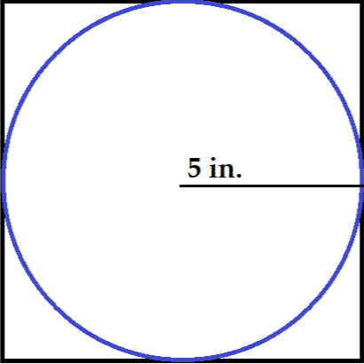

Target Practice: Estimating the value of Pi
\(\pi\) or "pi" is a mathematical constant which is approximately equal to 3.14159. This number is an irrational number whose decimal representation never ends or enters into a repeating pattern. This value is used regularly in formulae within math and physics, most commonly, \(\pi\) appears when we are trying to calculate the circumference and area of a circle. The circumference of a circle is equal to \(2\pi r\) and the area of a circle is equal to \(\pi r^2\). In this lesson, we will use this last formula to help us estimate \(\pi\).
Constructing our Dartboard
- 
Look at This Image
What do you see? This is the image of a circle inscribed in a square. The circle touches the square at exactly 4 points and each of these points are the midpoint of one side of the square. The radius of the circle is 5 inches. How long is each side of the square?Finding the Ratio of Areas
The area of a square is equal to the square of one of its sides. In this case, the square has an area of 25 in2. To find the area of a circle, we will use our formula \(\pi r^2\), which for our diagram is equal to 100\(\pi\) in2.This means, for our diagram, the ratio of the circle to the square is equal to \(\frac{25}{100\pi^2}\)
Applying Area to Probability
Area Ratios
As we saw in the previous explanation, we can find the area of the circle and the area of the square. If you don't remember these values, hover over the inner circle or outer circle to check. The ratio of the inside circle to the square is \(\frac{25}{100\pi^2}\).Applied to Probability
Imagine you threw a dart at this square, but like me, you have zero ability to aim and your dart is going to end up in a completely random point on the square.What is the probability that the dart ends up in the circle? Well, that is equal to this same ratio of the circle to the square, \(\frac{25}{100\pi^2}\).
Knowing this, lets try to estimate the value of Pi based on the number of darts in the circle. Since my dart throws are random, the number of darts that land in the circle divided by the total number of darts thrown should be equal to\(\frac{25}{100\pi^2}\). In other words:
$$\frac{\textrm{Darts in the circle}}{\textrm{Total Darts}} = \frac{25\pi}{100}$$
Rearranging we find:
$$\pi = \frac{100}{25} \cdot \frac{\textrm{Darts in the circle}}{Total Darts} $$
The Search for Pi
Number of Points in Circle: 0 Total Number of Points: 0 Percentage of Points in Circle: 0% Pi Estimate: 3.14